执行摘要
一万名零售银行客户里，每五个就有一个流失了。这份分析回答三个问题：谁会走，为什么走，银行来得及做什么。最终模型是 XGBoost + SMOTE，经 5 折网格搜索调参。
四个发现
- 年龄是最强预测因子。EDA 和 SHAP 都把年龄排在第一：40 到 50 岁之间流失风险陡增，流失客户年龄中位数约 45 岁，留存约 35 岁。
- 不活跃先于流失出现。
IsActiveMember=0进 SHAP 前三，是模型里最有提前量的信号——参与度下滑在销户之前很久就能观察到。 - 产品越多，流失越多。持有 3、4 个产品的客户反而流失更多（反直觉），产品数在三种重要性度量里都排第二。
- 德国市场异常。无论看原始计数还是模型排序，德国客户的流失都远高于法国和西班牙。
结果速览
| 项目 | 结果 |
|---|---|
| 分析对象 | 10,000 名客户（流失 2,037 人，占 20.4%） |
| 最终模型 | XGBoost + SMOTE，5 折网格搜索调参 |
| 排序能力（测试集） | ROC-AUC 0.876，PR-AUC 0.727 |
| 流失客户捕获率 | 调优阈值 0.23 下 85%；默认阈值 0.5 下 61% |
| 主要驱动因素 | 年龄、活跃状态、产品数量、地区 |
数据与探索
数据包含人口属性（年龄、性别、国家）、账户属性（余额、产品数、信用分、在网年限、信用卡、活跃标志）和流失标签。质量检查没有发现缺失值，特征之间也没有多重共线性；标识列直接删除。预处理为 75/25 分层划分（random_state=42 全程固定），Geography 独热编码，Gender 序数编码，数值特征标准化——编码器和缩放器只在训练集上拟合，避免数据泄漏。
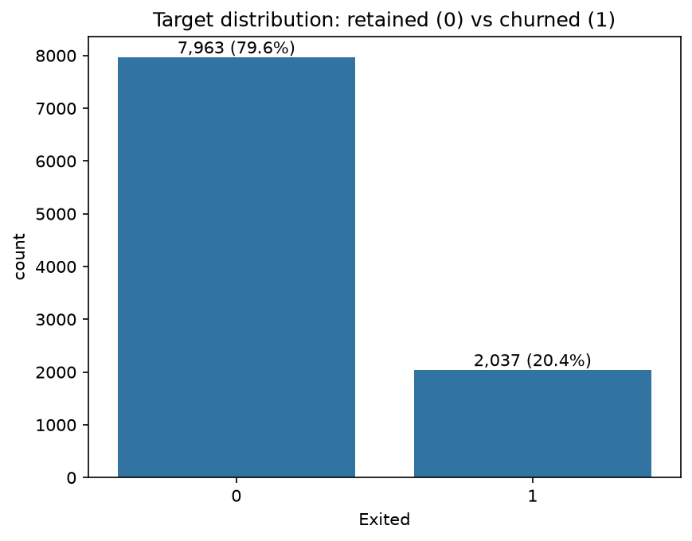
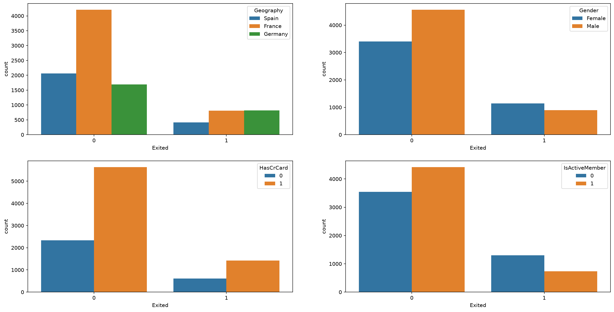
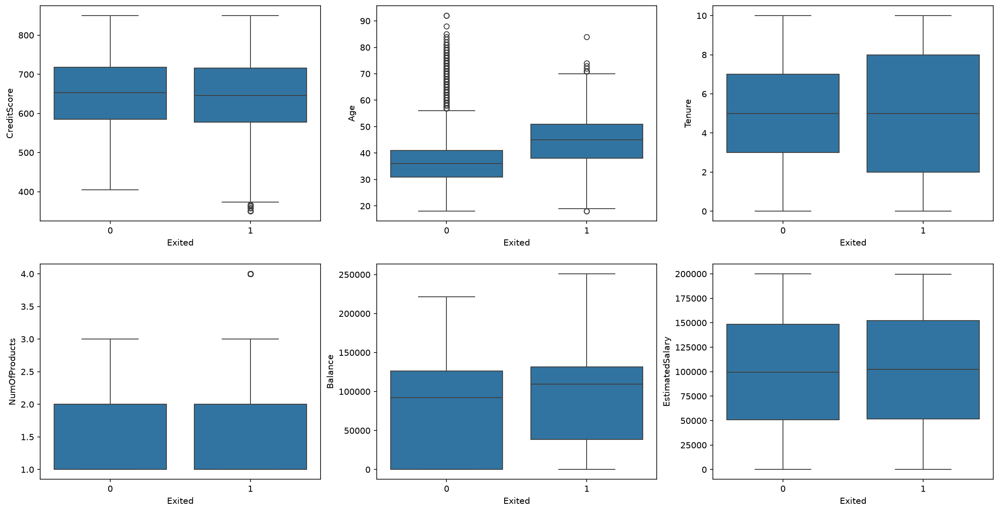
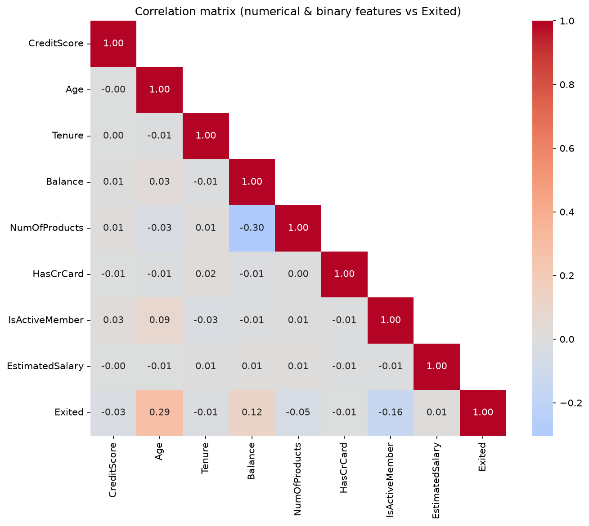
同协议下的模型对比
四个分类器在同一套协议下调参，对比才算数：每个模型都放进 imblearn 流水线，SMOTE 只作用于交叉验证的训练折；超参数用 5 折 GridSearchCV 按 ROC-AUC 选。
| 模型 | 准确率 | 精确率 | 召回率 | F1 | ROC-AUC | PR-AUC |
|---|---|---|---|---|---|---|
| XGBoost + SMOTE | 0.8544 | 0.6507 | 0.6149 | 0.6323 | 0.8757 | 0.7265 |
| 随机森林 | 0.8440 | 0.6042 | 0.6778 | 0.6389 | 0.8681 | 0.7002 |
| KNN | 0.7388 | 0.4184 | 0.7250 | 0.5306 | 0.8078 | 0.5277 |
| 逻辑回归 | 0.7160 | 0.3945 | 0.7387 | 0.5144 | 0.7900 | 0.4801 |
精确率、召回率、F1 按默认 0.5 阈值计算；ROC-AUC 和 PR-AUC 衡量排序能力，与阈值无关。流失客户占 20%，无技能模型的 PR-AUC 约 0.20，所以在这份数据上 PR-AUC 比 ROC-AUC 更能拉开差距。
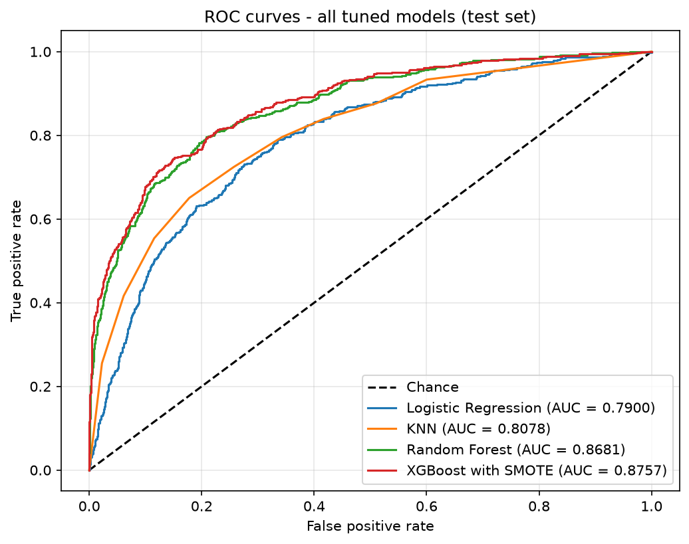
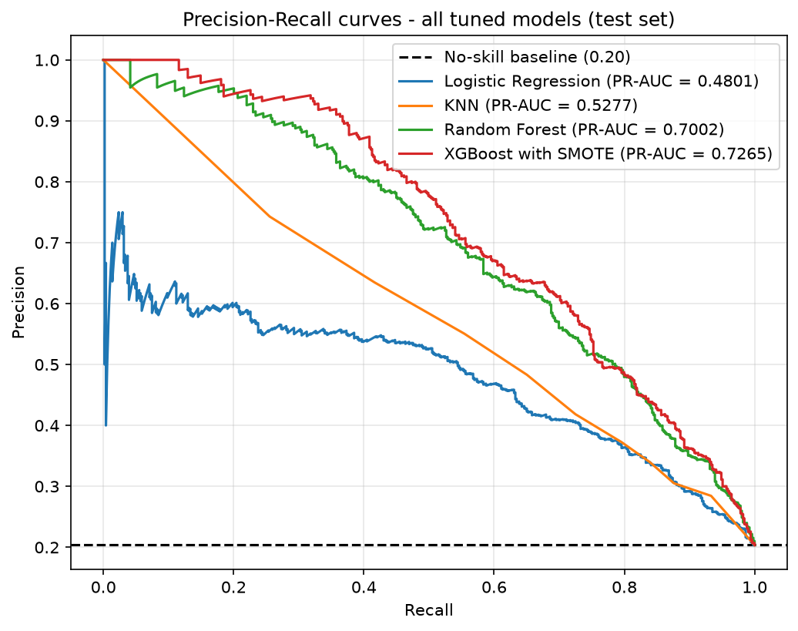
推荐 XGBoost：两个排序指标都是第一，而月度风险评分靠的就是排序能力。逻辑回归和 KNN 的高召回是拿大量误报换的，精确率 0.4 上下意味着十个联系对象里六个白打。随机森林最接近，在 0.5 阈值下召回和 F1 还略高一点，但阈值训练完随时能调，排序能力调不了。
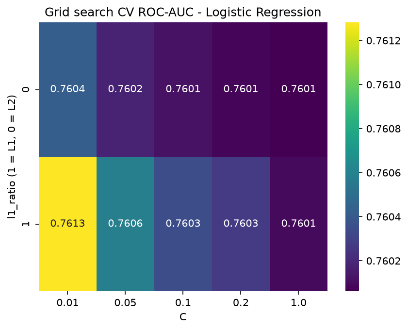
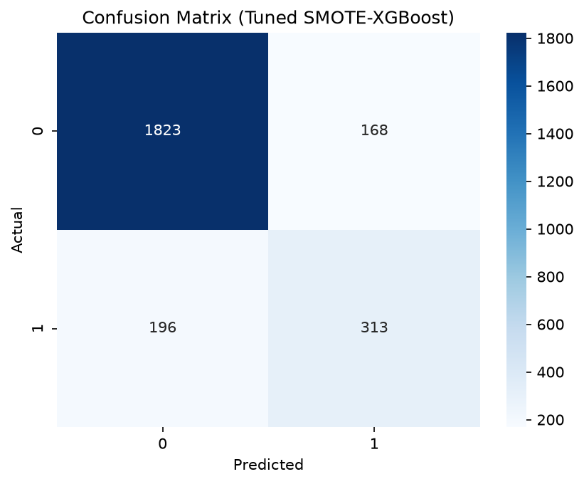
调参不用准确率，因为全部预测"留存"就有 79.6% 的准确率，这个指标在不平衡数据上没有分辨力。改报排序指标（ROC-AUC / PR-AUC）加上明确的运营点，才能真实反映模型对稀有类的分辨能力。
阈值调优
默认 0.5 阈值把两种错误当成同样代价，实际不是：漏掉一个真实流失客户，丢的是整个客户关系；误报一个，多发一份挽留优惠而已。扫描阈值并最大化 F2（召回权重是精确率的两倍）：
| 运营点 | 阈值 | 精确率 | 召回率 | F1 | F2 | 标记客户数 |
|---|---|---|---|---|---|---|
| 默认 | 0.50 | 0.6507 | 0.6149 | 0.6323 | 0.6218 | 481 |
| F2 最优 | 0.23 | 0.4337 | 0.8487 | 0.5741 | 0.7124 | 996 |
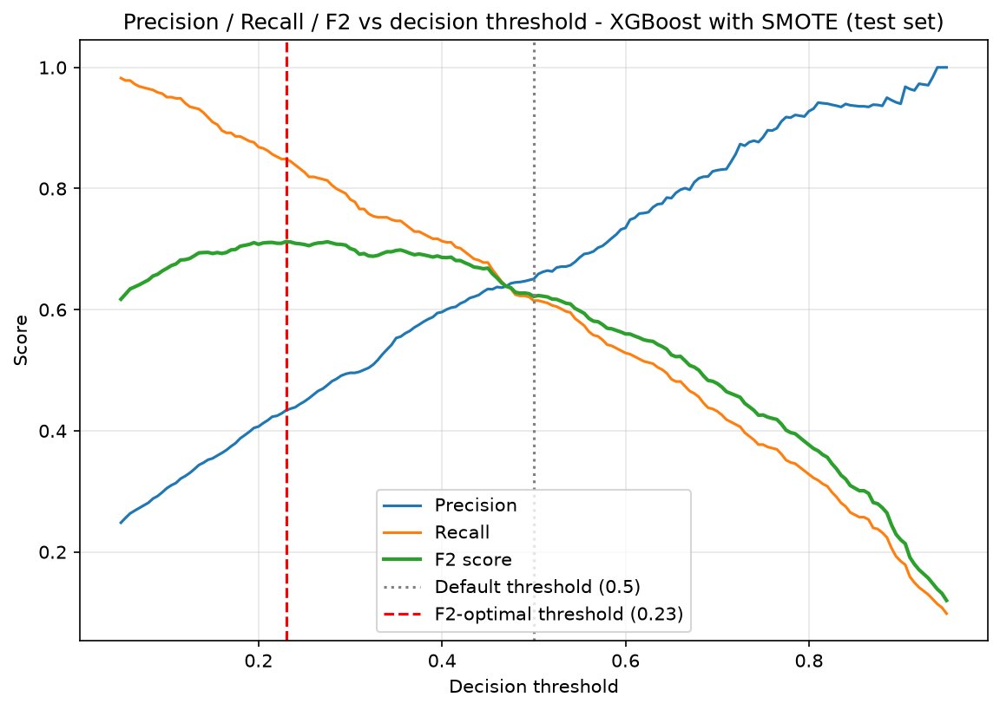
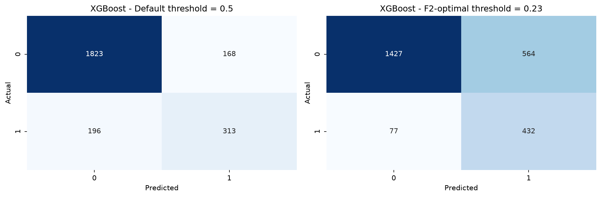
阈值降到 0.23 后，测试集 509 名流失客户里能抓到约 432 人，默认阈值只有约 313 人；联系名单从 481 人翻到 996 人。这笔账值不值，取决于一份优惠的成本和一个客户的价值；预算固定时，阈值可以沿精确率-召回率曲线任意设，这正是选排序能力最强那个模型的原因。
成本盈亏平衡分析
F2 只是"更看重召回"的代理，真正的目标是成本。这份数据没有成本字段（客户价值、优惠成本、活动成功率），所以不去编造，只假设一个比值 C = 漏掉一个流失客户的代价 / 误发一份挽留优惠的代价，并只比较两类错误。默认 0.5 阈值下，模型误发 168 份优惠（假阳）、漏掉 196 个流失客户（假阴）；调优后的 0.23 阈值下，误发 564 份、漏掉 77 个。令两类错误的总成本相等，得到盈亏平衡比值约 C* = 3.3：只要漏掉一个流失客户的代价超过约 3.3 份误发优惠，调优阈值的总成本就更低。
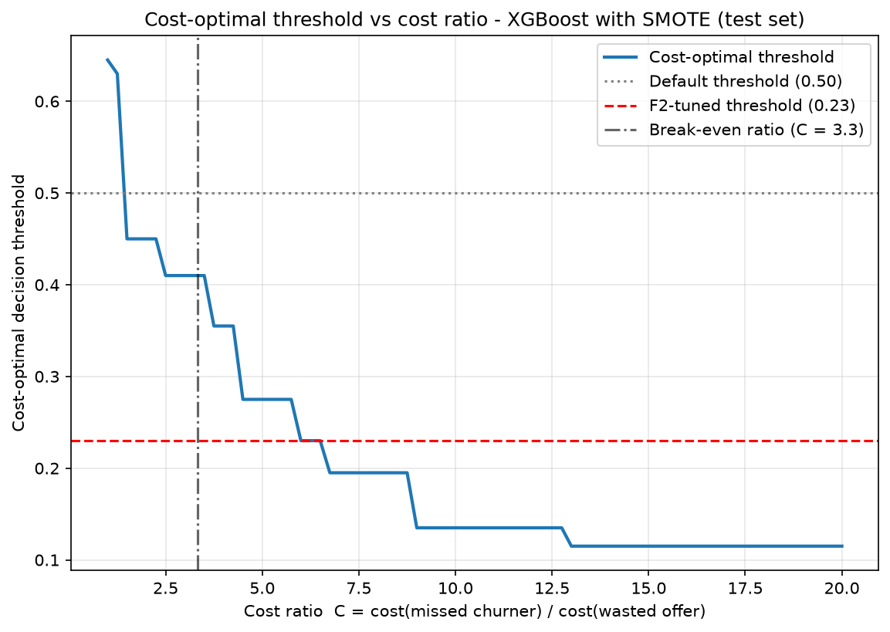
零售银行里，一个流失客户关系的价值是单份挽留优惠的很多倍，任何现实中的比值都远高于 3.3，所以激进的运营点是划算的。全程不假设任何绝对金额，所以结论对任何符合这个比值的银行都成立。（SMOTE 扭曲了概率校准，所以运营阈值用经验扫描确定，而非教科书的 1/(1+C) 公式。）
客户为什么走：SHAP 归因
SHAP 给每个特征在每次预测里的贡献一个带符号的数值，模型的判断既能整体读，也能逐个客户读。为排除方法本身的偏差，SHAP 排序与随机森林不纯度重要性、XGBoost gain 重要性交叉核对过，三种方法的头部特征一致。
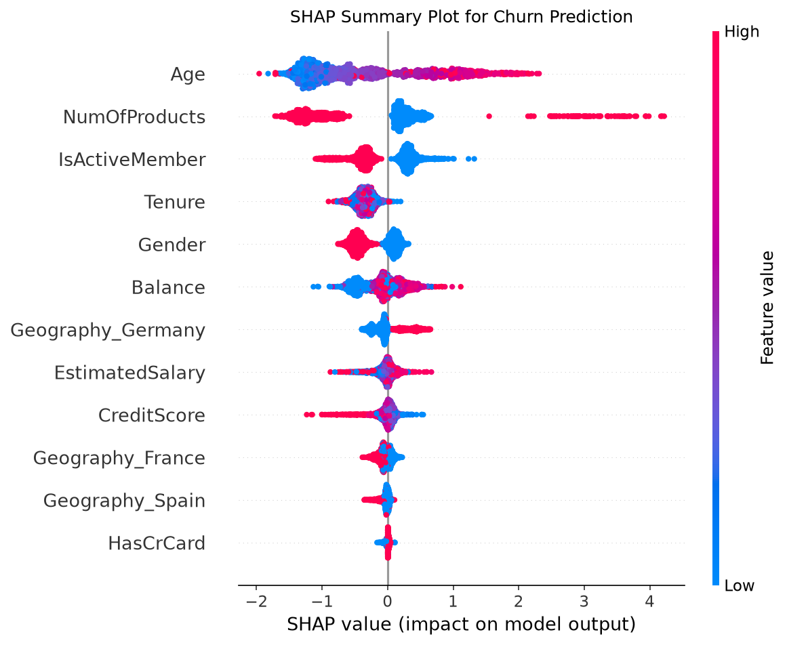
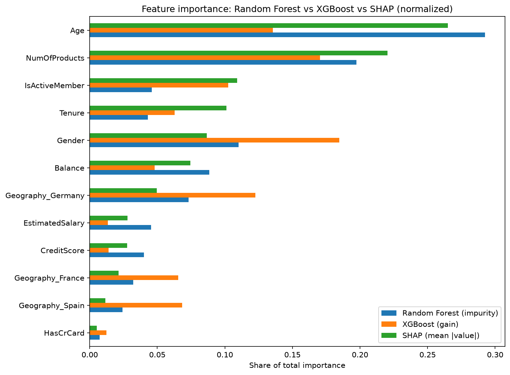
测试集的两个极端客户说明这些因素怎么叠加：风险最高的客户（流失概率 0.998）集齐了所有驱动因素——4 个产品、年龄远高于平均、不活跃、余额高于平均、身在德国；唯一反向的因素是在网年限较短，作用小到可以忽略。风险最低的客户（流失概率 0.005）刚好相反：2 个产品、年轻、活跃、零余额、信用分高。
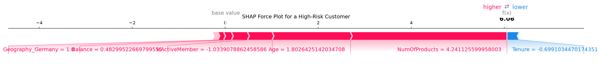
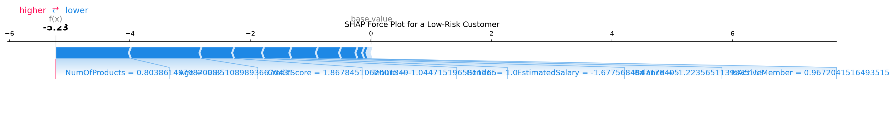
行动计划
| 措施 | 怎么做 | 分析依据 |
|---|---|---|
| 月度风险评分 | 用 XGBoost 按调优阈值给全量客户打分；客服拨打前先看该客户的前三个 SHAP 因素。 | 四个候选里排序能力最好；调优阈值下抓住 85% 的流失客户。 |
| 再激活活动 | 对中高风险段的不活跃会员发加息、免手续费或面谈邀约。 | 不活跃是 SHAP 前三的驱动因素。 |
| 产品组合梳理 | 约持有 3 个以上产品的客户做精简梳理；销售激励改为奖励适配组合而非产品数量。 | 产品数在三种重要性度量里都排第二。 |
| 德国市场调查 | 做竞品分析，收集当地客户和网点员工的反馈。 | 德国在 EDA 和树模型排序里都是高流失。 |
后续与复现
后续：挽留方案对照 A/B 测试；每季度重训模型；营销成本变化时重新定阈值；把风险分和 SHAP 因素接进 CRM。notebook 可在本地完整重跑（uv run jupyter nbconvert --to notebook --execute），随机种子固定为 42，图表输出到 figures/。